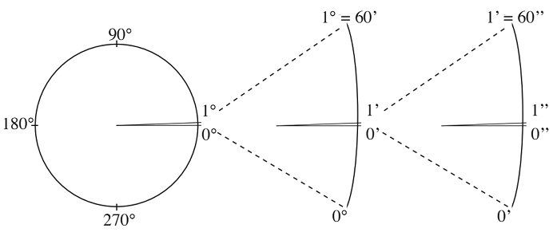
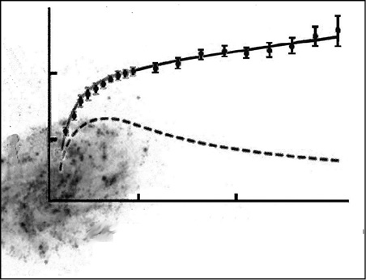

4. Bölüm - EVREN’İN YAPISI
39- Evren’in büyük ölçekli yapısı nasıldır?
Yüzyıl önce Evren’in büyük ölçekte neye benzediğine ilişkin hiçbir bilgimiz ve fikrimiz yoktu. Karşıt bazı görüşler olmasına karşın, Evren’in yalnızca Samanyolu’ndaki milyarlarca durağan yıldızdan ibaret olduğu düşünülüyordu. Bugünse elimizde o günkünden çok farklı, olabildiğince ayrıntılı, güzel ve çok büyük bir “resim” var. Artık Evren’de gökadamızdan başka 125 milyarı aşkın gökada olduğunu, maddenin ve varlığından yeni haberdar olduğumuz karanlık maddenin bu gökadalarda yoğunlaştığını, gökadaların arasında büyük boşluklar bulunduğunu, bununla birlikte gökadaların da gerçekte gruplar ve süper gruplar oluşturduğunu biliyoruz. Gökadaların hem içinde hem de dışında Evren’in çok dinamik bir yapısı olduğunu, gökcisimlerinin çok yüksek hızlarla devindiğini ve Evren’imizin artan bir hızla da genişliyor olduğunu da öğrendik. Artık Evren’in gerçek boyutlarına, yapısına, başlangıcına ve hatta sonuna ilişkin bilimsel ve tutarlı düşünce ve öngörülerimiz var. Her geçen gün gelişen teleskoplar ve başka gözlem aygıtları sayesinde kapsamlı gözlem projeleri yürütülüyor. Böylece eldeki Evren modeli sürekli daha açık, daha ayrıntılı olarak yenileniyor, iyileştiriliyor.
Günümüz kozmolojisinin önemli çalışma alanlarından biri Evren’in büyük ölçekli yapısıdır; yani gökadaların, gökada kümelerinin ve süper kümelerin oluşumları ve evrimleridir. Bilim insanlarının yaklaşık 80 yılda oluşturduğu model, Evren’de hiyerarşik bir yapılanma bulunduğunu ortaya koyuyor. Buna göre önce en küçük nesneler, Evren’in yapıtaşı olan gökadalardır. Bunlar gruplaşarak gökada kümelerini oluşturmuş ve kümeler de bir araya gelerek süper kümeleri oluşturmuştur. Süper kümelerin oluşumları hâlâ sürmektedir.

Son 30 yılda gökadaların Evren’deki dağılımlarını ve hareketlerini saptamak için bazı büyük araştırma projeleri gerçekleştirildi. Bunlardan en büyüğü 2000-2005 arasında yürütülen Sloan Digital Sky Survey’dir. Bu projede saptanan gökadaların yerleştirildiği harita görülüyor. Haritada her nokta bir gökadaya karşılık gelir. Haritanın merkezinde Samanyolu var ve çemberin çapı da 2 milyar ışık yılıdır.


100 milyon ışık yılı
400 milyon ışık yılı
1.6 milyar ışık yılı

Max Planck Astrofizik Enstitüsü’nün bilgisayar canlandırmasında, birkaç milyar ışık yıllık bir ölçekte milyonlarca gökada kümesi ve süper küme ipliksi bir yapıda (sanki birbirine bağlıymış gibi-) görülüyor.
Gökadalardan oluşan ipliksi dokunun arasında engin boşluklar vardır.
Evren’in yapısına ilişkin bu tür modeller yaratmanın bir yöntemi, sürekli gelişen ve çeşitlenen teleskoplarla gökadaları ve gökada kümelerini gözlemek ve incelemektir. Böylece en küçük öğesi gökadalar olan üç boyutlu bir Evren haritası çıkartılabilir. Bu konudaki en kapsamlı çalışma ABD’de New Mexico’daki Apache Point Gözlemevi’nde 2,5 m’lik bir teleskopla sürdürülüyor. 2000’de başlayan gözlemlerin sonucunda, kullanılan birtakım özel aygıtlar sayesinde, 930.000 gökadanın konumu ve hareketi belirlenmiş ve haritası çıkartılmıştır. Aynı gözlemevinde benzer bir çalışma Samanyolu’ndaki 240.000 yıldız için yapılmış ve gökadamızın yapısı, oluşumu ve evrimine ilişkin ayrıntılı veriler elde edilmiştir.
Evren’in yapısı konusunda çalışmanın bir başka yöntemi de, süper bilgisayarlar kullanarak birtakım canlandırmalar yapmaktır. Böylesi süper bilgisayar canlandırmalarında elde edilen görüntüler (Evren’in değişik dönemlerindeki gökada dağılımlarını gösteren görüntüler) gözlemlerde elde edilen gerçek görüntülere oldukça benzer. Gökada kümeleri ve süper kümelerin oluşturduğu ipliksi yapılar ve onların arasında kalan “boşluk”lar kolayca görülür.
Süper kümeler 200 milyon ışık yılı genişlikte Evren bölgelerini kaplayacak kadar büyük olabilir. Bunlar kütleçekim kuvveti nedeniyle birbirine komşu duran, bir anlamda birbirine dokunan, onlarca hatta yüzlerce gökada kümesinin oluşturduğu zincir ya da yaprağı andıran yapılardır. Süper kümelerin kuşattığı boşluklarsa, hemen hemen küresel yapılardır ve ortalama 200 milyon ışık yılı çapındadırlar. Bu boşluklardaki madde yoğunluğu gökadalar arası uzaydakinin onda biri kadardır...
40- Evren’in temel özellikleri nelerdir?
Evren’in temel özellikleri izotropik ve homojen oluşu ve evrim geçirmesidir. Yalnız bu evrim, biyolojik anlamda bildiğimiz evrimden farklıdır ve daha çok zaman içinde farklılaşmayı, gelişmeyi anlatır. Evren dinamiktir ve başlangıcından bu yana sürekli bir değişim içinde olmuştur. Başlangıçta akıl almaz sıcak dönemlerden geçmiş, giderek soğumuştur. Bu soğuma hâlâ sürmektedir; çünkü Evren genişler. İlk dönemlerinden bu yana Evren’in içeriği de değişmiştir. Evren’in ilk dönemlerinde ne gökadalar ne de yıldızlar vardı. Başlangıçta Evren’de yalnızca hidrojen, helyum ve eser miktarda da lityum ve berilyum bulunuyordu; hatta daha da öncesinde bunlar da yoktu, Evren aşırı sıcak bir temel parçacık çorbası halindeydi. Ama zamanla soğudu seyrekleşti ve yıldızlar ile gökadalar oluştu; yıldızların içinde oluşan elementler, yıldızların ölümü sırasında uzaya yayıldı. Gökadaların ve yeni oluşan yıldızların madde içeriği değişti, çeşitlendi. Zamanla gökadalar da değişim geçirdi. Bunun yanında Evren genişledikçe gökada kümelerinin arası giderek açıldı, Evren’in yoğunluğu düştü. Yaşamı boyunca Evren’in genişleme hızı da değişti; önce artarken bir dönem yavaşladı sonra yine hızlandı; günümüzde hızla genişlemesini sürdürüyor. Kısacası Evren, Büyük Patlama anından günümüze değin büyük bir “evrim” geçirdi ve bu evrim hâlâ sürüyor.
Evren’in ikinci temel özelliği izotropik oluşudur; yani Evren her yönde aynı görünür. Aslında Evren’in bu temel özelliği ilk bakışta biraz kafa karıştırıcı gibi görünür. Çünkü ne yeryüzünde, ne Güneş Sistemi’nde ne de gökadalar arası uzayda değişik yönlere baktığımızda farklı görüntülerle karşılaşırız. Örneğin Samanyolu izotropik değildir. Bir merkezi vardır, kenarları ve kolları vardır. Yıldızlar homojen olmayan bir dağılım gösterirler. Hangi noktasından bakılırsa, o noktaya özgü bir görüntüyle karşılaşılır. Aynı durum Samanyolu’nun yakın çevresi için de geçerlidir. Gökadaların toplandığı bölgeler -gökada kümeleri- vardır ve bu gruplaşmaların arasında büyük boşluklar bulunur. Değişik yönlere bakıldığında hiç de birbirine benzer olmayan örüntülerle karşılaşılır.
Çünkü Evren’in izotropik olma özelliği küçük ölçeklerde fark edilemez; onun büyük ölçekli yapısı için geçerlidir. Küçük ölçeklerde değişik yönlerde farklı gökcisimlerinin değişik düzeylerde öbeklenmeleri görülür. Evren’in izotropikliğini anlamak için ona çok büyük ölçekte -200 milyon ışık yılından büyük- bakmak gerekir. En güçlü teleskoplarla yapılan gözlemler, Evren’in her yönde aynı göründüğünü ortaya koymuştur. Ne kadar derine (uzağa) bakılırsa, Evren’in bütün yönlerde o kadar benzer bir görüntüsü olduğu görülür.
Evren’in bir başka temel özelliği de, her bölgesinin, her köşesinin benzer oluşudur; yani özellikle farklı bir bölgesi yoktur. Bir başka deyişle Evren homojendir. Bu özellik de yine büyük ölçekli Evren için geçerlidir. Küçük ölçeklerde Evren hiç de homojen değildir. Gökadaların ve gökada kümelerinin milyonlarca ışık yıllık kenarları olan küpler içindeki dağılımları bile benzerlik göstermez. Bir başka deyişle küçük ölçekte eş büyüklükteki küplerin içinde belirgin biçimde farklı miktarda gökada bulunur ve bunlar farklı örüntüler oluşturur. Ancak ölçek iyice büyüdüğünde görünüm homojenleşir.
Evren’in homojen ve izotropik olduğu kozmoloji ilkesi adlı bir ilkeyle ortaya konur. Buna göre Evren’deki gökadaların yoğunlukları Evren’in her köşesinde aynıdır; konuma ya da yöne bağlı olarak değişmez. Evren’deki her yer birbirine eşittir; hiçbir özel yer, bölge yoktur. Evren’in farklı bir bölgesi yoktur. Einstein bunu 1931’de “... Evren’de her yer birbirinin benzeridir...” diyerek özetlemiştir. Kozmoloji ilkesi aslında Evren’in bir merkezinin ve kenarlarının olmadığını -eğer olsaydı kenar bölgeler ile orta bölgeler arasında farklar olurdu- ve Büyük Patlama’nın gerçekleştiği özel bir yerin (merkezin) bulunmadığını gösterir. Kozmoloji ilkesinin doğruluğunu gösteren en güçlü kanıtlardan biri Evren’in ilk dönemlerinden kalan görüntüsü olan “kozmik mikrodalga arka plan ışıması”dır.


Evren’in küçük bir bölümünde (yanda) bir milyar ışık yılı uzaklık için yapılan bu taramada, iki milyon gökadada birer nokta olarak görülüyor.
Bu, herhangi bir bölgesinde dikkat çekici bir boşluk ya da gruplaşma olmayan, pürüzsüz (izotropik) bir görüntüdür.
İzotropi, homojenlik ve genişlemeyi akılda canlandırabilmek için Mark Whittle’ın yaptığı bir benzetmeye başvurmada yarar var: “Çok büyük bir ormanda olduğunuzu düşünün. Çevrenizdeki ağaçların her biri bir gökadaya karşılık gelsin. Çevrenize baktığınızda her yönde aynı örüntüyü görürsünüz; izotropi. Herhangi bir yönde saatlerce yürüyün. Orman ve ağaçlar aynıdır; yani homojendir. Bu çok büyük ormanın bir gezegenin bütün yüzeyini kapladığını düşünün. Hangi yönde ne kadar yürürseniz yürüyün, ormanın yani gezegenin bir kenarına gelemezsiniz; çünkü yoktur. Buna karşın ormanın yani gezegenin yüzeyinin belli bir alanı vardır; sonsuz değildir. Aynı şekilde ormanda “merkez” olacak, diğerlerinden farklı herhangi bir yer de yoktur. Her yer birbirine eşittir. Bu varsayımsal gezegenin zamanla şiştiğini düşünün. Bu da Evren’in genişlemesine karşılık gelir. Her ağaç, yani her gökada birbirinden uzaklaşır. Ağaçların özellikle uzaklaştığı bir ağaç yoktur; bütün ağaçlar birbirlerinden uzaklaşır.”
41- Kozmik mikrodalga arka plan ışıması nedir?
Evren’in sıcaklığının Evren’in büyüklüğüyle doğrudan ilişkisi vardır. Evren büyüdüğünde, onun içinde serbest dolaşan fotonların enerjileri de düşer, dalga boyları uzar. Bir başka deyişle genişleyen Evren, içindeki fotonların dalga boylarını uzatır, enerjilerinin azalmasına neden olur.
Büyük Patlama anından sonraki 380.000 yıl boyunca Evren, plazma halindeydi: Aşırı sıcak ve yoğun bir madde-enerji çorbası gibiydi. Evren’de sanki yoğun ve parlayan bir sis vardı: Evren opaktı. Bu durum fotonların serbestçe ilerlemesine olanak vermiyordu. Ama o andan sonra Evren’in ortalama sıcaklığı 3000 Kelvin’in altına düştü. Elektronlar protonlarca yakalanmaya ve ilk atomlar oluşmaya başladı. Plazma hali sona erdi; sis dağıldı, Evren saydamlaştı ve fotonlar da rahatça ilerleyebildiler. O günlerde yüksek enerjilerle yola çıkan bazı fotonlar 13,75 milyar yıl boyunca soğuyan ve genişleyen Evren’de enerjilerinin büyük bölümünü yitirdiler ve elektromanyetik tayfın görünür bölümünden önce kızılötesi bölümüne, sonra da mikrodalga bölümüne düştüler. Enerjileri iyice azaldı ve dalga boyları büyüdü.
Bu ışıma bugün Dünya’dan mikrodalga şeklinde Evren’in her yanından gelen bir arka plan (fon) ışıması olarak algılanıyor. Zaten adı da buradan geliyor: Kozmik mikrodalga arka plan ışıması.
Kozmik mikrodalga arka plan ışıması Büyük Patlama’-nın en güçlü kanıtlarından biridir; ondan arta kalan ışımadır; bu nedenle ona “fosil ışıma” da denir. Böyle bir şeyin var olması gerektiği 1948’de George Gamow ve çalışma arkadaşları Ralph Alpher ile Robert Herman’ın yayımladığı bir makalede ortaya atılmıştı. Gamow ve arkadaşları Büyük Patlama’dan milyarlarca yıl sonra Evren’i kaplayan ~5 K’lik bir ışıma olması gerektiğini hesaplamışlardı.
Ancak o dönemde Büyük Patlama kuramı Evren’i açıklayan tek kuram olarak görülmüyordu; Evren’in yapısını ve gelişimini açıkladığı ileri sürülen bazı başka kuramlar da vardı. Bu nedenle o dönemde Evren’e yayılmış bir mikrodalga ışıma konusu bilim insanlarına pek ilgi çekici gelmedi. Ayrıca mikrodalga araştırmaları da daha çok yeni başlamıştı. Sonuç olarak Gamow ve arkadaşlarının ortaya attığı bu konuda araştırma yapılmadı.
1964’te uydu haberleşmesi ve birtakım radyoastronomi deneyleri yapmaya çalışan -fakat radyoteleskoplarına Evren’in her yanından gelen hafif bir gürültüden kurtulmayı bir türlü başaramayan- radyoastronomlar Arno Penzias ve Robert Wilson, Bell Laboratuvarları’nın New Jersey’deki güçlü radyoteleskopuyla bu ışımayı yanlışlıkla keşfettiler. Büyük Patlama’ya ilişkin en güçlü kanıtı keşfettikleri için 1978’de Nobel Fizik Ödülü’nü aldılar. Penzias ile Wilson yaptıkları ölçümlerde kozmik mikrodalga arka plan ışımasının ya da kısaca Evren’in sıcaklığının 2,725 K olduğunu bulmuşlardı. Gamow ve çalışma arkadaşları, 25 yıl önce, temel atom fiziği yasalarından yola çıkarak Evren’deki en büyük ölçekteki olguya, daha doğrusu onun 13,75 milyar yıllık bir sürecinin sonundaki değerine ilişkin bir tahminde bulunmuşlar ve yalnızca ~2,3 K yanılmışlardı. Bu keşif sayesinde Büyük Patlama kuramı, öteki kuramlara göre yerini çok sağlamlaştırdı ve zamanla Evren’i açıklayan tek kuram haline geldi.


1964’te gözlenen kozmik mikrodalga arka plan ışıması haritası.
COBE’nin gözlediği kozmik mikrodalga arka plan ışıması haritası.
WMAP’in gözlediği kozmik mikrodalga arka plan ışıması haritası.
Kozmik mikrodalga arka plan ışımasını ölçmek için, yer gözlemleri, balonlu gözlemler, uzaydan yapılan gözlemler ve bunların çeşitli kombinasyonlarını içeren birçok deney yapılmıştır. Bunlardan en önemlisi COBE uydusuyla yapılan ve kozmik mikrodalga arka plandaki sıcaklık anizotropilerinin saptandığı deneydir. WMAP uydusunun verileriyle oluşturulan kozmik mikrodalga arka plan haritası da bugüne kadar elde edilenlerin en iyisidir.
Kozmik mikrodalga arka plan ışıması ilk keşfedildiğinde, aygıtların duyarlıkları onu Evren’in her yanında aynı olarak algılayabilecek düzeydeydi. Kasım 1989’da fırlatılan ve Yer’den 900 km yukarıda bir yörüngeye oturtulan COBE uydusundaki çok duyarlı aygıtlarla kozmik mikrodalga arka plan ışıması yeniden incelendi. Işımanın aslında o kadar da pürüzsüz (her yanda tümüyle aynı) olmadığı ortaya çıktı. Gerçekte Evren’in bugünkü topaklanmış yapısından yola çıkılarak zaten uzak geçmişte de böyle olması gerektiği düşünülüyordu. Yüz binde bir duyarlılıkla Evren’in ilk dönemlerindeki bu sıcaklık farkları gözlemlendi; o dönemde de Evren homojen ve izotropikti. Elde edilen verilere göre Evren’in Büyük Patlama’dan 380.000 yıl sonraki haritası çıkartıldı. Bu harita Evren’in o dönemdeki farklı yoğunlukta olan, sıcak ve soğuk bölgelerini gösteriyordu. COBE ekibi bu ikonik haritaya Evren’in bebeklik fotoğrafı adını verdi. Kozmik mikrodalga arka plan ışımasındaki çok çok küçük bu yoğunluk farklarına, Büyük Patlama anından sonraki 10-36 saniyede başlayıp 10-33 ile 10-32 saniye arasında sona eren ve Evren’in hacminin 1078 kat büyüdüğü şişme (enflasyon) evresindeki kuantum dalgalanmalarının yol açtığı düşünülür.
Bu haritada aslında günümüz Evren’inin o dönemde atılmış tohumları görülüyordu. Evren’e şekil veren kütleçekim kuvveti sayesinde, ileride, o yüz binde bir daha yoğun olan gölgelerde, ilk yıldızlar ve gökadalar oluşacaktı. Gerçekten de çok değil yaklaşık 500 milyon yıl sonra, bunlar oluşmaya başladı.
42- Evren ne kadar büyüktür?
1838’de Alman gökbilimci Friedrich Bessel yakın yıldızlardan bazılarının uzaklığını ilk kez doğru ölçene kadar Evren’in ne kadar büyük olduğuna ilişkin hiç kimsenin bir fikri yoktu. Bessel, 61Cygni adlı yıldızın 0,31 saniyelik bir paralaksı olduğunu (artık 0,287 saniye olduğunu biliyoruz) ölçtü ve yaptığı hesaba göre 61Cygni’nin 93 trilyon kilometreden, yani 10 ışık yılından biraz daha uzak olduğunu buldu. Böylece geceleri gökyüzünde nokta kadar gördüğümüz yıldızların bize ve birbirlerine olan uzaklığı hakkında ilk kez bir fikrimiz oldu. 20. yüzyılın başlarına kadar da Evren’in yalnızca Samanyolu’ndaki milyarlarca yıldızdan oluştuğu ve durgun olduğu düşünüldü.
Hubble 1923’te Andromeda Bulutsusu’nun Saman-yolu’nun içinde yer alamayacak kadar uzakta olduğunu keşfedince, bir gecede Evren’imizin boyutları trilyonlarca kat büyüyüverdi. Andromeda da tıpkı Samanyolu gibi başlı başına bir gökadaydı ve milyarlarca yıldızdan oluşuyordu. Aslında sarmal bulutsu sanılan yapıların hepsi uzak birer gökadaydı ve Evren’de onlardan milyarlarca vardı.
21. yüzyıla geldik ve aradan yaklaşık yüzyıl geçmesine karşın, gökbilimciler Evren’in tam olarak ne kadar büyük olduğunu hâlâ bilemiyor; belki de hiç bilemeyecekler. Sonsuz büyük olma olasılığı var ama, bilim insanları sonlu bir büyüklüğü olduğunu düşünme eğilimindeler.
Her ne kadar Evren’in bir sınırı yoksa ve sonsuz büyüklükte olabilirse de, bizim hakkında bilgi sahibi olabildiğimiz (gelen ışıklar sayesinde gözleyebildiğimiz) sınırlı bir Evren bölgesi vardır. Buna “gözlemlenebilir Evren” denir. Gözlemlenebilir Evren, merkezinde Dünya’nın bulunduğu dev bir balon gibi düşünülebilir. Bunun içinde ışıklarının bize ulaşması 13,75 milyar yıldan daha kısa süren bütün gökadalar yer alır. Bu da Evren’in var olduğu -ilk ışıkların yola çıktığı- süredir.

Güneş Sistemi
William Herschel’in 1785’te yaptığı bu “Samanyolu haritası”. Çok uzun bir süre Evren’in yalnızca Samanyolu’ndan ibaret olduğu düşünülmüştür.
Evren’in sürekli genişliyor olması, “uzaklık” olgusunu, özellikle uzak nesneler için oldukça karmaşıklaştırır. Gökbilimciler büyük uzaklıkları anlatmak için genellikle ışığın yolculuk ettiği süreyi kullanırlar. Bu da ışığın, kaynağını terk ettiği anla bize ulaştığı an arasında geçen zamandır. Ama ışığın yolculuğu sırasında Evren genişlemiştir; yol almakta olan ışığın hem önündeki hem de arkasındaki Evren. Bir başka deyişle o bize doğru gelirken Evren’in genişlemesi nedeniyle aramızdaki uzaklık bir miktar artmıştır. O nedenle ışık, nesneyi terk edip bize doğru yola çıktığı anda, bizimle ışık kaynağının arasındaki uzaklık, ışık gözümüze geldiği andaki uzaklıktan daha kısadır -geçmişte. Bununla birlikte ışık kaynağının şu anki konumu da gönderdiği ışığın, ışık hızıyla aldığından daha da uzaktır. Çünkü o da gönderdiği ışık bize doğru ilerlerken olduğu yerde sabit kalmamış, Evren genişlediği için ters yönde ilerlemiştir.
Bu hesaplama yöntemiyle gözlemlenebilir Evren’in büyüklüğü hesaplanmıştır. Işığı 13,7 milyar yıl önce yola çıkmış ve gözümüze ulaştığını düşündüğümüz bir nesnenin şu anki uzaklığı 46 milyar ışık yılıdır. Bir başka deyişle gözlemlenebilir Evren’in (balonun) yarıçapı 46 milyar ışık yılıdır. Dolayısıyla gördüğümüz bütün gökadalar gerçekte (şu anda) 92 milyar ışık yılı çapı olan bir kürenin içinde yer almaktadır. Ama en uzağı bize 13,7 milyar ışık yılı ötedeymiş gibi görünür.


On bir milyar yıl önce X gökadasından çıkan bir ışık fotonu Samanyolu’na doğru ilerlemeye başlamıştır. O dönemde iki gökada arasındaki uzaklık yalnızca 4 milyar ışık yılıdır.
Altı milyar yıl sonra foton hâlâ Samanyolu’na varamamıştır; çünkü o yol alırken Evren genişlemiş ve ulaşmaya çalıştığı Samanyolu ondan uzaklaşmıştır.
Foton Samanyolu’na ulaşmış ve Dünya’daki bir gözlemci de X gökadasını 11 milyar ışık yılı ötede görmüştür. Ancak foton Samanyolu’na doğru ilerlerken Evren’in genişlemesi nedeniyle X gökadası Samanyolu’ndan daha da uzaklaşmıştır. Fotonun gözlemcinin gözüne ulaştığı anda X gökadasıyla Samanyolu’nun arasındaki uzaklık 18 milyar ışık yılına çıkmıştır.
foton Samanyolu’na doğru yola çıktı
foton Samanyolu’na doğru ilerliyor
foton Samanyolu’na varıyor
uzaklaşan X gökadası
X gökadası hâlâ uzaklaşıyor
X gökadası
Samanyolu
Samanyolu
Samanyolu
11 milyar yıl önce
5 milyar yıl önce
4 milyar ışık yılı
43- Evren’in genişlemesi ne demektir?
1929’da feşfedilen Evren’in genişliyor olduğu gerçeği, insanın kendi kökenine ilişkin (nereden geliyoruz?) en önemli keşiflerden biridir. Evren’in genişlemesi Büyük Patlama modelinin temelini oluşturur; onun çıkış noktasıdır. Peki, Evren’in genişlemesi ne demektir? Evren neyin içinde genişler? Evren’in genişlemesi Güneş Sistemi’nin, hatta Dünya’nın da genişliyor, büyüyor olduğu anlamına gelir mi?
Genişleme, gerçekte iyi bildiğimiz bir kavramdır. Bir ülkenin sınırlarının genişlemesini ya da bir petrol tankerinden sızan petrolün kirlettiği alanın genişlemesini kolayca anlar ve aklımızda canlandırabiliriz. Ülkenin ve deniz yüzeyindeki petrolün sınırları (kenarları) ve bir merkezi vardır. Bu sınırların ötesinde de genişlenebilecek bir bölge bulunur. Ancak Evren’in genişlemesi bildiğimiz şekilde olmaz. Bunun nedeni aslında Evren’in kendisinin, bildiğimiz şeylere pek benzemiyor oluşudur. Örneğin Evren’in bir merkezi ya da onu kuşatan sınırları yoktur. Bununla birlikte, Evren’in dışında da genişleyeceği bir bölge yoktur. Daha doğrusu Evren’in dışı diye bir yer bulunmaz. Bütün gökadalardaki ve gökadalar arası uzaydaki madde, enerji, karanlık madde ve karanlık enerji hep Evren’in içindedir. Bir merkezi ve sınırları bulunmayan Evrenimiz de sürekli ve artan bir hızla büyür, genişler.
Evren’de hangi uzak gökadaya bakarsak bakalım, onun bizden uzaklaştığını görürüz. Ancak daha yakın olanlar daha yavaş uzaklaşırken, uzaktakiler daha hızlı ve en uzaktakiler de en hızlı uzaklaşır. Bu durumun bazı istisnaları vardır. Yerel Grup gibi gökada gruplarındaki ya da kümelerdeki gökadalar birbirlerine kütleçekimsel olarak bağlıdır. Grup içinde değişik yönlerde ilerleyebilirler. Gökadaların küme içindeki bu tür hareketleri Evren’in düzgün genişlemesinden “sapma”lar olarak görülür. Bir başka deyişle küme içindeki kütleçekim etkileri Evren’in genişlemesine karşı işler. Aynı durum gökadaların içindeki madde için de geçerlidir. Yani gökadalardaki kütleçekim etkisi Evren’in genişlemesine karşı durur ve hiçbir gökada genişlemez.


Bu çizimlerde, belli bir hacmin içinde gerçekleşen konvansiyonel bir patlama modellenmiştir. Büyük Patlama ile başlayan Evren’in genişlemesi bu şekilde olmaz.
Bu çizimlerde, içerdiği her şeyle birlikte genişleyen Evren görülüyor. Genişleme bir merkezden dışa doğru değil, her yerde aynı şekilde oluyor. Evren’in dışındaysa hiçbir şey yok.
Bütün gökadaların bizden uzaklaşıyormuş gibi görünmesi garip bir durumdur. Sanki Samanyolu Evren’in merkezindeymiş ve bütün gökadalar ondan kaçıyormuş izlenimi uyandırır. Bir de eğer zamanı geri alabilsek, tüm gökadalar Samanyolu’nda buluşacakmış gibi gelir. Bir başka deyişle Evren’in merkezindeymişiz duygusuna kapılırız. Ne var ki, durum hiç de öyle değildir. Bu tümüyle bir yanılsamadır.
Konvansiyonel patlamalarda patlamanın bir merkezi olur. Merkeze yaklaştıkça madde yoğunluğu, sıcaklık ve basınç artar. Merkezden uzaklaştıkça maddelerin saçıldığı hacim büyür, madde yoğunluğu ve sıcaklık düşer. Büyük Patlama’yla başlayan Evren’in genişlemesi, konvansiyonel patlamanın bu betimlemesine uymaz; çok farklıdır. Büyük ölçekte Evren’de herhangi bir bölgede madde yoğunlaşması gözlenmez, Evren homojendir. Evren’in sıcaklığı da her yönde aynıdır (2,7 K). Yani Evren’in bir merkezi ve sınırları yoktur. Evren her yönde aynıdır.
Bu nedenle Samanyolu’nun Evren’in merkezindeymiş gibi algılanması bir yanılsamadır. Gerçekte hangi gökadadan öteki gökadalara bakılsa aynı manzarayla karşılaşılır: Bütün gökadalar uzaklaşıyor görünür. Gökadaların birbirlerinden uzaklaşıyor olması bir balonun üzerine tutturulmuş kâğıttan minik gökadaların balonun (bu örnekte iki boyutlu bir evrene karşılık gelir) şişirilmesiyle birlikte, birbirlerinden uzaklaşmasına benzer.


A
A
A
B
B
B
Gökadaların birbirinden uzaklaşma hızı uzaklıkla birlikte artar. Bu ilişkiye Hubble Yasası denir. Bu garip durum Samanyolu sanki Evren’in merkeziymiş gibi, hatta Büyük Patlama, Samanyolu’nda olmuş da o nedenle bütün gökadalar bizden uzaklaşıyormuş gibi bir fikre kapılmamıza yol açabilir. Ama durum böyle değildir. Çünkü bütün gökadalardan bakıldığında, aynı görüntüyle karşılaşılır. Yukarıdaki ilk resimde A gökadasından bakıldığında sanki öteki bütün gökadalar bizden uzaklaşıyormuş gibi görülür. Şimdi Evren’e baktığımız noktayı ikinci gökadaya doğru kaydıralım; ikinci resimde iki gökadanın ortasından bakılıyor. Orta noktada yine bütün gökadaları bizden uzaklaşıyormuş gibi görürüz. Sonunda B gökadasına gelelim ve oradan öteki gökadalara bakalım. Yine aynı şeyi görürüz: Bütün gökadaların bizden uzaklaştığını.
Genişleyen Evren kuramına göre, gerçekte Evren bir boşluğun ya da uzayın içinde genişliyor değildir. Kendisi genişler. Evren’in dışında hiçbir şey yoktur; Evren’in dışı diye bir şey yoktur. Gökadalar da gerçekte Evren’de büyük hızlarla ilerlemez. Onlar aslında uzayda durur, ancak aralarındaki uzay genişler ve uzaklık Evren’in genişlemesinden dolayı artar. Bu durum, fırında kabaran bir üzümlü kekin üzümlerinin kendileri hareket ettiği için değil de, kek kabardığı için birbirlerinden uzaklaşmasına benzetilebilir.
44- Evren kaç yaşındadır?
Çok değil 20 yıl önce Evren’in yaşının 10-20 milyar arasında olduğu söylenirdi. Çünkü Büyük Patlama’nın gerçekleştiği tarih ancak bu düzeyde bir kesinlikle hesaplanabiliyordu. 1990’lı yılların sonunda kesinlik biraz daha arttı ve 12-15 milyar aralığına gelindi. Ocak 2003’ten bu yana Evren’in yaşının kaç olduğundan neredeyse eminiz. Bu çok değerli veriyi Wilkinson Mikrodalga Anizotropi Sondası’na (WMAP) borçluyuz. Onun taşıdığı aygıtların mikrodalga ışımasındaki sıcaklık değişimlerine dayanarak çıkarttığı Evren haritası sayesinde, Evren’in yalnızca yaşına değil, genişleme hızına, hatta temel içeriklerine ilişkin de oldukça duyarlı veriler elde edilmiştir.
Evrenimizin genişlediğinin yaklaşık 90 yıldır farkındayız. Artık genişleme hızını da oldukça “kesin” biliyoruz. Evren’in bugünkü genişleme hızını geçmişe yönelik kullanarak, Büyük Patlama’nın günümüzden ne kadar zaman önce olduğunu hesaplayabiliyoruz. Gökbilimciler Evren’in genişleme hızını Hubble Değişkeni (eskiden Hubble Sabiti denirdi) diye adlandırdıkları bir sayıyla anlatırlar.
Hubble Değişkeni, gökadaların uzaklıklarıyla hızları arasındaki ilişkiyi ortaya koyar ve H0 simgesiyle gösterilir.
genişleme hızı = H0 x uzaklık
Evren’in genişleme hızı zaman içinde değişmiştir. O nedenle H0’daki sıfır, değişkenin günümüzdeki değerini göstermek için kullanılır. Değişkenin değerini belirlemek oldukça zordur; çünkü gökadalar arası uzaklıkların ölçümüne dayanır. Gökadalar arası uzaklıkları duyarlı bir şekilde ölçmek de gerçekten zor bir iştir.
Edwin Hubble’ın kendi gözlemlerine dayanarak bulduğu ilk değer 150 km/s/milyon ışık yılıydı. 1994’te Hubble Uzay Teleskopu’nun, yakın bir gökadaya yönelik gözlemleri sonucunda 24,5 km/s/milyon ışık yılı olduğu hesaplanmıştı. En son gözlemler doğrultusunda Hubble Değişkeni’nin 22±2 km/s/milyon ışık yılı olduğu kabul ediliyor. Bu şu anlama gelir: On milyon ışık yılı ötedeki bir gökada, bizden saniyede 220 km’lik bir hızla uzaklaşır; 20 milyon ışık yılı ötedeki bir gökadaysa saniyede 440 km’lik bir hızla uzaklaşır; 300 milyon ışık yılı ötedeki bir gökada da saniyede 6600 km’lik bir hızla uzaklaşır. Hubble Değişkeni’nden yararlanarak yapılan basit hesapla (Hubble Değişkeni’nin tersi, doğrudan Evren’in -kabaca- yaşını verir), Evren’deki her şeyin tek bir noktada toplandığı anın, yani Büyük Patlama anının günümüzden 13,5 milyar yıl önce gerçekleştiği sonucuna ulaşılır. Bir başka deyişle Evren’imiz 13,5 milyar yaşındadır.

Büyüklük Tarihi
Uzaklık
0
artıyor
sabit
azalıyor
Zaman
şimdi
yaş < 13,5 milyar
yaş < 13,5 milyar
yaş < 13,5 milyar
Yukarıdaki grafikte gökadalar arası uzaklıkların artışının -Evren’in genişleme hızının- zamanla değişimi görülüyor. Genişleme sabit bir hızla (22 km/s/milyon ışık yılı) olsaydı, Evren’in yaşı 13,5 milyar olacaktı; eğer geçmişten azalarak gelip, azalarak devam etseydi, o zaman Evren’in yaşının 13,5 milyardan küçük olması gerekecekti; eğer artarak gelip, artmaya devam etseydi, o zaman da 13,5 milyardan daha yaşlı olması gerekirdi. Ne var ki bu üç senaryo da gerçekleşmemiştir. Gerçekleşen durum genişleme hızının belli dönemlerde arttığı belli dönemlerde de azaldığı karma bir durumdur.
Ancak bu hesap, büyük bir ön kabul ile birlikte yapılmıştır. O da Evren’in genişleme hızının Evren’in başlangıcından bu yana hep aynı olduğu ön kabulüdür. Halbuki Evren’in genişleme hızı zamanla değişmiş olabilir, ki gerçekten de değişmiştir. Gökbilimciler Evren’in geçmişte bir dönem çok hızlı genişlediğini, sonra bu hızın yavaşlayıp bugünkü düzeyinin de altına indiğini ve sonra yeniden arttığını bulmuşlardır. Geçmişte Evren’in genişleme hızının düşük ve yüksek olduğu dönemlerin aslında birbirine yakın uzunlukta olduğu ortaya çıkmıştır. Sonuçta yapılan hesaplara göre Büyük Patlama’nın günümüzden 13,75±0,11 milyar yıl önce olduğu anlaşılmıştır. Bir başka deyişle Evren’imizin yaşı 13,75 milyardır.

Uzaklık
Hız
22 km/s
Büyük Patlama
Şimdi
Şimdi
Zaman
Zaman
Azalıyor
Artıyor
0
0
Alttaki grafikte Evren’in genişleme hızının zaman içindeki değişimi görülürken, üstteki grafikte de buna karşılık gelen uzaklık artışı görülüyor. Buna göre bugün 22 km/s/milyon ışık yılı olan Evren’in genişleme hızı,
gelecekte daha da artacak ve gökadalar birbirlerinden daha hızlı uzaklaşacak. 1999’da ortaya çıkan bu olgu aslında bilim insanlarının çoğunun karşılaşmayı hiç beklemediği bir olguydu. Onlar Evren’in genişlemesinin süreceğini, ama genişleme hızının ya azalacağını ya da sabit kalacağını bulmayı umuyorlardı.
45- Evren’deki uzaklıklar nasıl ölçülür?
Evren’deki uzaklıkları olabildiğince kesin bilmenin büyük önemi vardır. Çünkü uzaklıkları doğru bilmek yalnızca Evren’in ne kadar büyük olduğunu değil, aynı zamanda onun birtakım temel özelliklerini de anlamamızı sağlar. Her şeyden önce, bu sayede onun genişleme hızını ve yaşını doğru biliriz. Ayrıca uzaklıklar Evren’de ne kadar geçmişe baktığımızı da söyler.
Evren’de uzaklıklar ışık yılı birimiyle ölçülür. Bir ışık yılı çok büyük bir uzunluktur; yaklaşık 9,4 trilyon kilometreye karşılık gelir. Evren’deki uzaklıklar da, onlarca, yüzlerce, hatta milyonlarca ışık yılı düzeyindedir. Acaba bu kadar kolay yazılan, ama gerçekte bu kadar büyük olan uzaklıkları nasıl ölçüyoruz? Gece gökyüzünde yalnızca küçük birer ışık noktası olarak görünen yıldızların uzaklığını nasıl hesaplıyoruz?
Evren’de uzaklıklar ölçülürken tek bir yöntem kullanılmaz. Yakın gökcisimlerinin uzaklıklarını ölçerken kullanılan yöntemler ayrıdır, uzak gökcisimlerinin uzaklıklarını ölçerken kullanılan yöntemler ayrıdır. Bazı gökcisimlerinin uzaklıklarıysa hem yakın hem de uzak ölçümlerde kullanılan yöntemlerle bulunabilir. O zaman uzak gökcisimlerinin uzaklıklarını ölçerken kullanılan yöntem, yakın ölçme yöntemiyle kalibre edilmiş olur. O da daha uzak gökcisimlerinin ölçümünde kullanılan yöntemlerin kalibrasyonunda kullanılır. Böylece birbirlerinin kesinliğine dayanan yöntemlerden oluşan bir “uzaklık merdiveni” ortaya çıkar. Bu merdivenin en alt basamağında en yakın gökcisimlerinin uzaklıklarını ölçmede kullanılan paralaks ya da üçgenleme yöntemi bulunur.
Paralaks yöntemi
Kolunuzu öne uzatın ve başparmağınıza önce sol gözünüzü kapatıp sağ gözünüzle bakın; sonra tersini yapın. İki bakışınızda başparmağınızı arka plandaki nesnelere göre farklı noktalarda görürsünüz. Parmağınızı gözünüze yaklaştırdığınızda, bu iki nokta arasındaki uzaklık açılır, parmağınızı uzaklaştırdığınızda açıklık kapanır. Elinizde çok küçük tabanlı (göz açıklığınız), çok uzun bir yüksekliği olan (kolunuz) ve çok dar açılı bir üçgen vardır. Lise geometrisine dayanarak, bunlardan ikisi bilindiğinde, üçüncü hesaplanabilir. Yakın yıldızların uzaklığı işte, bu basit yöntemle hesaplanır. Üçgene taban olarak Dünya’nın Güneş’e uzaklığının iki katı (yörünge üzerinde altı ay arayla bulunduğu konumların arasındaki uzaklık) kullanılır: 2 AB. Arkadaki yıldızlara göre yakın bir yıldız belirlenir. Dünya, Güneş’in çevresinde dönerken altı ay aralıklı, Güneş’e göre simetrik iki noktadan yıldıza bakılır ve arka plandaki yıldızlara göre değişen görüntülerinin arasındaki açı belirlenir. Dünya’nın iki konumu arasındaki 2 AB’lik uzaklıktan ve bu aşırı küçük açıdan yararlanılarak, çok çok dar açılı üçgenin yüksekliği (yani Güneş’e olan uzaklığı) hesaplanır. Bu, kuramsal olarak son derece basit olmasına karşın, uygulaması çok zor bir yöntemdir. Çünkü çok küçük açıların büyük duyarlılıkla ölçülmesini gerektirir.

açı
uzaklık
taban


Bir çemberin 360’da birine bir derece diyoruz. Bir derecenin 60’da biri dakikadır. Bir dakikanın 60’da biri de, yani bir derecenin 3600’de biri bir saniyedir.
1838’de Alman matematikçi ve gökbilimci Friedrich Bessel dönemin en duyarlı gözlem aygıtlarını son derece özenle kullanarak ilk paralaks ölçümlerini yapmıştı. Böylece en yakın yıldızların da birkaç ışık yılı ötede olduğu ortaya çıkmıştı.
1 parsec
1 saniye
Dünya’nın yörüngesi
1 AB
Gökbilimcilerin ışık yılını kullanmak yerine genellikle yeğledikleri bir başka uzaklık birimi vardır: parsec (pc). Bu terim paralaks ve arcsecond (saniye) sözcüklerinin birleşiminden oluşan İngilizce bir kısaltmadır: par-sec. Bir parsec, tabanı 1 AB ve açısı da bir saniye olan üçgenin yüksekliğine (yani yıldızın uzaklığına) karşılık gelir ve 3,26 ışık yılıdır. 1 parsec=3,26 ışık yılı = ~30 trilyon kilometre.

En duyarlı aygıtlarla bile paralaks yöntemiyle uzaklıklarını hesaplayabileceğimiz yıldızlar (her ne kadar sayıları milyonları bulsa da), gökadamızın ancak küçük bir bölgesini oluşturur.
Daha uzak yıldızların uzaklıklarını hesaplayacak başka yöntemler gerekir.
Uzaydaki uzak gökcisimlerinin paralaks açılarını bulmak çok ince bir iştir. Ancak bu iş için de çok duyarlı bazı aygıtlar geliştirilmiştir. Atmosferin olumsuz etkilerine karşın, yeryüzünden yapılan ölçümlerde, bir saniyenin yüzde biri büyüklüğündeki açılar ölçülebilmektedir. Atmosferin üstüne çıkıldığındaysa bu duyarlılık daha da artar. 1990’lı yıllarda ESA’nın Hipparcos adlı gözlem uydusu 1000 parsec çapındaki bir kürede 120.000 yıldızın paralaks açısını saniyenin binde biri duyarlılıkla ölçmüştür. 2012’de fırlatılacak olan Gaea adlı uyduysa, bir milyar yıldızı (gökadamızın yüzde birini) inceleyecek ve bir saniyenin 20 milyonda biri duyarlılıkta ölçümler yapacaktır.
Uzaklık merdiveninin bundan sonraki basamakları, gökcisimlerinin uzaklıklarının, parlaklıklarına göre belirlenmesine dayanır. Birbirinin aynı, 100 Watt’lık beş ampulü birbirlerinden üçer metre arayla bir hizada dizelim. Gece olunca ampulleri yakalım. Bize uzak olan ampullerin uzaklıkla orantılı olarak parlaklıklarının da azaldığını hemen fark ederiz. Ampullerin gerçek (mutlak) parlaklıklarını bildiğimiz ve görünür parlaklıklarını da ölçebildiğimiz sürece, yine basit bir denklemle uzaklıklarını hesaplayabiliriz.
Görünür parlaklık = mutlak parlaklık / 4πd2
Bir yıldızın 10 parsec öteden algılanan parlaklığı o yıldızın mutlak parlaklığıdır. Gökbilimciler mutlak parlaklıklarını bildikleri yıldızları “standart ışık kaynağı” olarak kullanır. Aslında uzak gökcisimlerinin uzaklıklarının hesaplanmasında da bu yaklaşım kullanılır; ancak yararlanılan standart ışık kaynakları, uzaklığa göre değişir
Sefeit değişkenleri yöntemi
Çıplak gözle gece gökyüzüne baktığımızda, yıldızların parlaklıkları hep aynıymış, hiç değişmiyormuş gibi gelir. Halbuki bir dürbün ya da küçük bir teleskopla yapılan gözlemlerde, yıldızlardan bazılarının parlaklıklarının periyodik olarak değiştiği hemen fark edilebilir. Parlaklığı değişen yıldızlardan en ünlüsü 1700’lü yılların sonunda keşfedilen, 891 ışık yılı ötedeki Delta Sefeus’tur ve kendi adıyla “sefeitler” (ya da “sefeit değişkenleri”) olarak anılan bir grup oluşturur. Bunlar yaşamlarının son evresine girmiş, kararsızlaşmış ve düzenli aralıklarla (periyodik olarak) küçülüp büyüyen, bir anlamda “zonklayan” yıldızlardır. Küçülüp büyüme dönemlerinde doğal olarak parlaklıkları da değişir. 1908’de bu yıldızların parlaklıklarıyla değişim periyotları arasında bir ilişki olduğu fark edilmiştir: Parlak olanlar yavaş yavaş değişir, periyotları uzundur; sönük olanlarsa hızlı değişim gösterir, periyotları kısadır. Bu çok değerli bilgi sayesinde uzak yıldızların uzaklıklarını da ölçmek kolaylaşmıştır.
Paralaks yöntemi kullanılarak yakındaki sefeitlerden bazılarının gerçek uzaklıkları saptanmış ve bu yeni yöntemin kalibrasyonu yapılmıştır. Sefeitler çok güçlü yıldızlardır. Güneş’ten ortalama olarak 100-1000 kat daha güçlüdürler. Örneğin Kutup Yıldızı (Polaris) 4 günlük periyotta parlaklığı yüzde 10 değişen bir sefeittir. Sefeitler çok uzaktan görülebilir. Samanyolu’nun komşusu olan gökadalardaki sefeitleri saptamak hiç zor değildir. Zaten Edwin Hubble da ünlü çalışmasında Andromeda’nın Samanyolu’nun içindeki bir bulutsu olamayacak kadar uzakta yer aldığını sefeitlerden yararlanarak ortaya çıkartmıştır. Bu yöntemin zor yanlarından biri, yıldızlar arası ortamdaki tozun etkilerinin üstesinden gelmektir. Toz, yıldızın görünür parlaklığının daha az algılanmasına yol açar. Farklı dalga boylarındaki ışıklarla yapılan gözlemler sayesinde bu sorun giderilir.

Uzak ampullerin görünür parlaklıkları uzaklıkla birlikte azalır.
Görünür parlaklık
Uzaklık
Hubble Uzay Teleskopu’nun (HUT) temel görevlerinden biri, yakın gökadalardaki sefeitleri bulup uzaklıklarını hesaplamaktı. Onun sayesinde sefeitlerin görülebilme uzaklığı 10 kat arttı; yani 1000 kat daha büyük bir hacimdeki sefeitler görülebilir oldu. 1999’da sonlandırılan bu görevde HUT, 65 milyon ışık yılı içindeki 18 gökadada 800 sefeit saptayıp uzaklıklarını ölçmüştür. Uzaklıkları oldukça duyarlı bir şekilde hesaplanan bu 18 gökada, uzaklık merdiveninde bir üst basamakta yer alan yöntemin kalibrasyonunda kullanılmıştır.
Tully-Fischer yöntemi
Brent Tully ve Rick Fischer’in geliştirdiği ve Tully-Fischer Yöntemi olarak bilinen uzaklık hesabı, gökadaların mutlak parlaklıklarıyla kendi eksenlerindeki dönüş hızları arasındaki ilişkiye dayanır. Büyük ve parlak gökadalar daha hızlı dönerken, küçük ve sönük gökadalar daha yavaş döner. Doppler etkisi kullanılarak gökadanın dönüş hızını saptamak kolaydır. O hızdaki bir gökadanın mutlak parlaklığı grafikten çıkartılır. Gözlem sırasında gökadanın görünür parlaklığı zaten elde edilir. Basit denklemimiz sayesinde çok uzak gökadaların uzaklıkları da kolayca hesaplanır.

Uzaktaki bir sefeidin parlaklığının hangi periyotta değiştiğini gözlemlemek kolaydır. Periyodu bilinen sefeidin mutlak parlaklığı grafikten çıkartılır. Gözlem sırasında o sefeidin görünür parlaklığı da ölçülür. Denklem sayesinde yıldızın uzaklığı bulunur.
Mutlak parlaklık
Periyot (gün)
104
103
102
1
3
10
30
100
Uzaktaki bir sefeidin parlaklığının hangi periyotta değiştiğini gözlemlemek kolaydır. Periyodu bilinen sefeidin mutlak parlaklığı grafikten çıkartılır. Gözlem sırasında o sefeidin görünür parlaklığı da ölçülür.
Denklem sayesinde yıldızın uzaklığı bulunur.
Ne var ki Tully-Fischer yöntemiyle ancak birkaç yüz milyon ışık yılı içindeki gökadaların uzaklıkları doğru hesaplanabilmektedir. Kuşkusuz bunlar çok büyük uzaklıklardır; ancak gözlemlenebilir Evren’in 13,7 milyar ışık yıllık yarıçapı göz önüne alındığında, ilk binde birlik hacimden bile küçük bir bölge içinde kaldıkları görülür. Gerçekten uzak, örneğin 10 milyar ışık yılı ötedeki gökadaların uzaklıklarını ölçmek için muazzam parlaklıkta ve mutlak parlaklığını bildiğimiz yeni standart ışık kaynaklarından yararlanmak gerekir.
1a tipi süpernovalar
Yaklaşık 20 yıl boyunca yürütülen araştırmaların sonunda böyle bir ışık kaynağı bulunmuştur: 1a tipi süpernovalar ya da beyaz cüce süpernovaları. Bu tip süpernovalar eşsiz bir ışık kaynağıdır; milyarlarca ışık yılı öteden görülebilirler. Birkaç gün boyunca çok parlak kalırlar, sonra birkaç ay içinde yavaş yavaş sönükleşirler. Zor olan şey, çok uzak gökadalarda gerçekleşen 1a tipi süpernovaları yakalayabilmektir. Bu amaçla büyük teleskoplar bazen günler boyunca Evren’in belli bir köşesine odaklanır ve sürekli fotoğraf çeker. Çekilen fotoğraf bir öncekiyle karşılaştırılır. Eğer aynılarsa, süpernova olmamış demektir. Eğer sonraki fotoğrafta ek bir ışık kaynağı görülürse, o zaman bir süpernova yakalanmış demektir. Hemen o ışığın tayfı incelenir ve parlaklık değişim grafiği çıkartılır. Eğer 1a tipi süpernovaysa uzaklık ölçümünde kullanılır.
Evren’deki uzaklıkların ölçümü kozmoloji açısından çok önemlidir. Uzaklıklar içinde yaşadığımız Evren’in en temel özelliklerini bize söyler. Ama uzaklık ölçmek hiç de kolay değildir. Bu yöntemlerin geliştirilmesi ve uzaklık merdiveninin kurulması yüzyılı bulmuştur. Ölçüm duyarlılığı da sürekli arttırılmıştır. Çok değil 20 yıl önce, ölçülen uzaklıklardaki hata payı yüzde 50’ler düzeyindeydi; Evren’in yaşı için 10-20 milyar arasında deniyordu. Günümüzde Hipparkos astrometri uydusu gibi yüksek teknolojili gözlem aygıtları sayesinde bu oran yüzde 5-10 arasına çekilmiştir. Uzaklık ölçmek için yeni yöntem arayışları sürüyor. Yeni yöntemler geliştirildikçe eskileri yeniden sınanıyor ve kalibre ediliyor. Her geçen gün Evren’deki uzaklıklar daha kesin olarak hesaplanıyor. Üzerinde çalışılan bazı yöntemlerle on yıl içinde yüzde 2’lik hata payına inilmesi bekleniyor.

1a tipi süpernovalar, yıldızlarından biri beyaz cüce olan ikili yıldız sistemlerinde görülür. Büyük kütleli yıldızdan beyaz cüceye madde aktarımı olur. Beyaz cüce giderek büyür; ama bu büyümenin fiziksel bir üst sınırı vardır. 1,4 Güneş kütlesine ulaşan beyaz cüce iç dengesini yitirir ve çok parlak bir süpernovayla bütün malzemesini uzaya yayar; geride ne bir nötron yıldızı ne de bir karadelik kalır. Bu tür süpernovalara
1a tipi süpernova denir. 1a tipi süpernovalar standart ışık kaynağı olmaya çok uygundur. Çünkü parlaklıklarının doruğundayken hepsi de neredeyse aynı miktarda ışık yayar.
46- Evren’e ilişkin bilgiler nasıl elde edilir?
Gökbilim, en eski bilim dallarından biridir. Onu öteki bilim dallarından ayıran önemli bir yanı vardır. Öteki bilim dallarında birtakım nesneler alınıp incelenir, analiz edilir, bazı testlerden geçirilir ve üzerlerinde deneyler yapılır. Ne var ki gökbilimde durum böyle değildir. Gökbilimciler yüzlerce, binlerce hatta milyonlarca ışık yılı ötedeki nesnelerle, yıldızlarla, gökadalarla, bulutsularla uğraşır, onları gözler ve inceler. Çok az birkaç istisna, Dünya’ya düşen göktaşları, Ay’dan getirilen kayalar ve 25143 Itokawa adlı asteroitten getirilen kaya örnekleri dışında, Evren’deki herhangi bir nesnenin en küçük bir parçası bile elde yoktur. Gökbilimciler araştırmalarında yalnızca gökcisimlerinden çıkıp Dünya’ya ulaşan ışıklardan yararlanır. Yıldızların, gökadaların yapılarına ilişkin bütün bilgiyi bu az miktardaki ışığı analiz ederek, o ışıkların taşıdığı bilgileri ortaya çıkararak elde ederler. Yıldız ışıklarını toplamak için de teleskopları kullanırlar.
1900’lü yılların başında, dönemin ünlü gökbilimcisi George Ellery Hale “Evren’e bakan gözlerimiz, yani teleskoplarımız ne denli büyük olursa, o denli net ve keskin bir görüşümüz olur” demişti. Hale iyi bir gökbilimci olmanın yanında, ikna yeteneği yüksek bir girişimciydi. Kurduğu güçlü bağlantılar sayesinde Kaliforniya’daki Wilson Dağı’na bir gözlemevi yaptırmış ve buraya 1917’de dünyanın en büyük (ayna çapı 2,5 m olan) teleskopunu kurdurmuştu. Hale haklıydı. Gözlemevinde 1919’da çalışmaya başlayan Edwin Hubble 1922-1923 yıllarında yaptığı gözlemlerle, teleskopun ilk ışığını görmesinden yalnızca beş yıl sonra, Evren’e bakışımızı tümüyle değiştirdi. O günden sonra da giderek büyük teleskoplar yapılmaya başlandı.
Teleskop mercekleri gerçekte 13. yüzyıldan beri var olan gözlük merceklerinden türemiştir. İlk teleskopu tam olarak kimin geliştirdiği bilinemese de, bu onur Hollandalı Hans Lippershey’e verilir. Ama onu gökbilimin temel aygıtı haline getiren kuşkusuz Galileo olmuştur. Merceklerden oluşan basit ilk teleskoplardan yaklaşık 60 yıl sonra ışık toplama parçası olarak mercek yerine aynanın kullanıldığı ilk yansıtmalı teleskopu Newton 1668’de yapmıştır. 1850’de metal aynaların yerini cam aynalar almıştır.
1839’da keşfedilen fotoğrafın 1880’li yıllarda teleskoplarda kullanılması gökbilim açısından tam bir devrim olmuştur. Çünkü bu sayede teleskop, gözlenen cisimleri kaydeden ve sonra yeniden inceleme olanağı tanıyan bir alete dönüşmüştür. Ayrıca etki alanı da genişlemiştir. Uzun pozlama süreleri sayesinde gözle hiçbir zaman görülemeyecek denli sönük cisimler de artık görülebilir, saptanabilir olmuştur.
Gökbilimciler sürekli olarak Evren’in daha net görüntülerini elde etmeye çalışmıştır. Daha büyük teleskop aynaları demek, gökcisimlerinden gelen ışıkların daha çoğunun toplanabilmesi, yani daha net, daha parlak görüntü elde edilmesi demektir. Ancak atmosferin içinde hareketli birçok katman vardır, sürekli hava hareketleri, türbülanslar olur. Bunlar uzaydan gelen ışıkları etkiler ve gökcisimlerinin teleskoplardaki görüntülerini bulanıklaştırır. Onlarca yıl bu sorunun üstesinden gelinememiştir. Bu nedenle de büyük teleskop yapımına ara verilmiştir. Onun yerine, eldeki teleskopların veriminin yükseltilmesine, gelen ışıkları daha iyi toplayabilecek, değerlendirebilecek aygıtların geliştirilmesine çalışılmıştır. Bu alanda da büyük başarılar sağlanmıştır; elektronik devrimi gökbilimde de devrime yol açmıştır. Fotoğraf plakalarının yerine, elektronik kayıt aygıtları kullanılmaya başlanmıştır. Bunlar plakalara göre aşırı duyarlı ve çok üstündür. 1990’lı yıllarda yıldızlardan gelen ışığın yüzde 80-90’ından yararlanabilen CCD’ler (charged coupled device -düşen ışığı elektrik gerilimine çeviren, ışığa çok duyarlı foto diyotlardan oluşan aygıt) geliştirilince, uzun bir aradan sonra yeniden büyük teleskop yapımına başlanmıştır.

Fotoğrafın teleskopla birleşmesi modern gökbilimin, bir başka deyişle Hubble’ın büyük keşfinin yolunu açmıştır. Hubble’ın incelediği Andromeda fotoğraflarından biri görülüyor. Beyaz zemin üzerinde siyah noktalar daha kolay seçildiğinden gökbilimciler “negatif”ler üzerinde çalışırdı.
Atmosferin yer merkezli teleskoplar üzerinde birçok olumsuz etkisi vardır. Örneğin yer merkezli teleskoplarla elektromanyetik tayfın yalnızca görünebilir ışık bölümü ile radyodalgalarının belli bir bölümü ancak gözlemlenebilir. Çünkü öteki bütün dalga boylarındaki ışınların yeryüzüne ulaşması atmosferdeki bazı moleküllerce engellenir. Örneğin morötesi ışınların büyük bölümü ozon tabakasındaki ozon (O3) moleküllerince tutulur. Kızılötesi ışınların bir bölümünü de atmosferdeki su buharı engeller.
Işık
Elektrik Eski Yunan’dan beri bilinir. Eski Yunanlar yün kumaşlara sürttüklerinde, bazı nesneleri kendine çeken ve kıvılcım çıkartan kehribara “elektron” diyorlardı. Manyetizmayı da Çinliler 1100’lü yıllardan beri biliyordu; pusulanın kullanıldığı ilk Çin gemileri bu yıllarda denizlere açılmıştı. Ama doğanın bu iki gizemli olgusu arasında bir ilişki olduğu 1820’de Hans Christian Øersted’in bir ders sırasında rastlantı eseri elektrik akımının manyetizmayı etkilediğini keşfetmesine kadar anlaşılamadı.
1860’lı yıllar boyunca James Clerck Maxwell elektrikle manyetizma arasındaki bu ilişki üzerine çalıştı. Bir süre sonra bu iki olgunun aslında tek bir olgu olduğunu buldu: Elektromanyetizma. Sonra elektrik yüklerinin birbirini nasıl ittiğini/çektiğini, manyetik kutupların tek başlarına olamayacağını (hep çiftler halinde olduklarını), manyetizmadaki değişimin elektrik üreteceğini ve elektriksel değişimin de manyetik alan oluşturacağını dört zarif formülle gösteriverdi. Bunun yanında elektromanyetik enerjinin uzayda dalgalar halinde yayıldığını keşfetti. Daha da ileri giderek bu dalgaların hangi hızla ilerlediğini buldu. Hesapları sonucunda ulaştığı hız onu oldukça şaşırttı; çünkü elektromanyetik dalgalar boşlukta ışık hızıyla ilerliyordu, yani saniyede 300.000 km. Böylece Maxwell’in elektrik ve manyetizma çalışmalarının bir sonucu olarak ışığın da aslında bir elektromanyetik dalga olduğu anlaşıldı.
Işık sözcüğüyle aslında bütün elektromanyetik dalgalar anlatılır. Bunların yalnızca küçük bir bölümü elektromanyetik tayfın küçük bir aralığındaki görünür ışıktır. Eğer elektromanyetik tayf 2500 km uzunluğunda bir film şeridi olsaydı, bunun ancak bir karesi görünür ışığa karşılık gelirdi. Görünür ışık gerçekte birçok renk içerir: kırmızı, turuncu, sarı, yeşil, mavi ve mor. Her rengin farklı bir frekansı vardır. En düşük frekanslı olanı kırmızı ışık (430 pHz –saniyede 430 trilyon titreşim) ve en yüksek frekanslı olanı da mor ışıktır (760 pHz –saniyede 760 trilyon titreşim). Bu frekans aralığının dışındaki ışıkları göremeyiz. Kırmızı ışığın frekansından daha düşük frekanslı ışığa kızılötesi ışık denir. Bunlar düşük enerjili ışıklardır. Bütün cisimler sıcaklıklarına bağlı olarak kızılötesi ışık yayar. Her sıcaklığın kendine özgü kızılötesi ışığı vardır. Mor ışığın frekansından büyük frekanslı ışığa morötesi ışık denir. Bunlar yüksek enerjili ışıklardır. Canlıların hücreleri için tehlikelidirler. Güneş’in morötesi ışık yayımı çok güçlüdür. Stratosferde (atmosferin 15-50 km arasındaki bölümü) bulunan ozon (O3) tabakası bu ışıkları soğurur ve çok büyük bölümünün yeryüzüne ulaşmasını engeller. Elektromanyetik tayfın en yüksek frekanslı, dolayısıyla en yüksek enerjili ve en tehlikeli ışıkları gamma ışınlarıdır. Bazı radyoaktif maddelerin yanı sıra, bazı gökadalarda gamma ışını yayan doğal kaynaklar vardır.
Bu nedenle daha 1920’li yıllarda, Alman gökbilimci Hermann Oberth tarafından uzay teleskopları gündeme getirilmiştir. 1970’li yılların başından beri çeşitli dalgaboylarında gözlem yapan 90 dolayında uzay teleskopu değişik yörüngelere yerleştirilmiştir. Bunlar arasında kuşkusuz en popüler olanı 1990’da fırlatılan Hubble Uzay Teleskopu’dur. Bu teleskoplardan gelen eşsiz veriler sayesinde, gökbilim son 25 yılda altın çağını yaşamıştır.
Yıldızların ışıkları yalnızca onları bize göstermekle kalmaz. O ışıkların içinde çok daha başka ve çok değerli bilgiler de vardır. Bu bilgilerin bir bölümünün ortaya çıkartılması için ışıkların bir prizmadan geçirilmesi ve tayfın incelenmesi gerekir. Tayf incelemelerinin sonucunda yıldızların içerdiği elementler, yüzey sıcaklıkları, hangi hızla yakıtlarını tükettikleri ve hangi hızla hareket ettikleri gibi birçok bilgiye ulaşılabilir. Çok uzun zamandır gökyüzü gözlemleri, teleskoplardan bakılarak yapılmıyor. Teleskopların arkasına değişik elektronik aygıtlar bağlanıyor ve gökcisimlerinden gelen ışıklardaki bilgiler ortaya çıkartılıyor, toplanıyor; bilgisayar ekranlarına ve sabit disklerine aktarılıyor.
Radyoastronomi
Yeryüzünde, yaklaşık 3,8 milyar yıllık evrim sürecinde, insanın ve hayvanların gözleri yalnızca görünür ışığı algılayacak şekilde uyarlanmıştır. Ancak Dünya’ya gelen ışıklar yalnızca görünür ışık değildir. Uzaydan, özellikle de Güneş’ten her dalga boyunda ışık gelir. Bunlar değişik aygıtlarla algılanabilir. Bu tür aygıtlar da geçen yüzyılın başında yapılmaya başlanmıştır. Örneğin radyo ve televizyon antenleri radyodalgalarını algılar. Aynı şekilde radyoteleskoplar da uzaydan gelen radyodalgalarını algılar.
Uzayın radyoteleskoplarla gözlenmesi 1930’lu yıllarda başlamıştır. Çok sayıda, küçük radyoteleskopla elde edilen görüntülerin tek bir büyük radyoteleskoptan elde edilenle eşdeğer olduğunun anlaşıldığı 1940’lı yıllardan sonra radyoastronomi hızla gelişmiştir. Büyük radyoteleskop kompleksleri kurulmuştur.


New Mexico’da 1980’de çalışmaya başlayan VLA (Very Large Array -Çok Büyük Dizi) 25 m çaplı, 27 adet büyük teleskoptan oluşur.

Bütün güçlü teleskoplar dünyanın en kuru havalı, ışık kirliliğinden ve atmosferin olumsuz etkilerinden en az etkilenilen yerlerine kurulur.
Yukarıda, Hawai’deki Mauna Kea Yanardağı’na kurulmuş çok sayıda gözlemevi görülüyor.
47- Karanlık madde nedir?
1970’li yıllarda ilk güçlü bilgisayarlar ortaya çıktığında, gökbilimde de onlardan yararlanılmaya başlandı. Bilgisayarlara bazı evrensel yasa ve ilkelerle birlikte, Samanyolu’nun içeriği de girilip birtakım bilimsel canlandırmalar yapıldı. Ancak sonuçlar biraz garipti; çünkü canlandırmalara göre Samanyolu’nun kısa sürede parçalanıp dağılması gerekiyordu. Gökadamızı bir arada tutabilmek için göründüğünden daha çok kütleye gereksinim vardı. Ne var ki, gözlemlere göre Samanyolu’nda öyle fazladan bir kütle de yoktu. Öte yandan bilgisayar canlandırmaları ne derse desin, Samanyolu da olduğu yerde parçalanmadan dönüyordu. Bilim insanlarının karşısında bir türlü gözlemleyemedikleri, ama var olması gerektiğini fark ettikleri bir şey çıkmıştı. Bu gözlenemeyen maddeye “karanlık madde” adını verdiler. Yalnızca gökadaların bütünlüklerini koruması değil, gökadaların kümeler içindeki hareketleri de ancak hesapların içine karanlık madde girince anlamlı hale gelebiliyordu.

Atmosferin olumsuz etkilerinin ortadan kaldırılmasının en iyi, ama pahalı yolu, uzay teleskopları kullanmaktır. Uzay teleskoplarıyla birlikte yeni bir çağ başlamıştır. Hubble Uzay Teleskopu 1990’da yörüngeye yerleştirildiğinde, kısa süren bir şaşılık döneminden sonra, gökbilimi derinden etkileyecek ve yer merkezli hiçbir teleskopla elde edilemeyecek birçok fotoğraf çekmiştir.
Gerçekte bu durumun farkına ilk kez 1970’li yıllarda değil, ondan yaklaşık 40 yıl önce varılmıştı. 1933’te Fritz Zwicky adlı bir gökbilimci karanlık madde düşüncesine, kuramsal olarak ya da birtakım bilgisayar canlandırmalarının sonucunda değil (zaten o zaman bilgisayar yoktu), gökadaların hareketlerini teleskopla inceleyerek ulaşmıştı. Zwicky 300 milyon ışık yılı ötede, binden çok gökadadan oluşan Coma kümesindeki gökadaların hareketlerini inceliyordu. Gökadaların, onları bir arada tutan kütleçekim kuvvetine göre çok hızlı hareket ettiklerini fark etmişti. Aslında birçoğu değişik yönlerde ilerleyip, bir anlamda fırlayıp kümeden çıkmış olmalıydı; ama öyle değildi. Zwicky ortada ciddi bir kütleçekim etkisi olan, ama kendisi bir türlü teleskopla görülemeyen, büyük bir şey olduğunu anladı. Bunu da bilim dünyasına duyurdu. Ancak onun bu fikri o dönemde hiç kimseye çekici gelmedi.

Gözlemler artık doğrudan teleskoptan bakılarak yapılmıyor. Onun yerine teleskopun topladığı ışıklar değişik amaçlı fotometreler, spektrograflar ve değişik dalga boylarında çalışan kameralara yönlendiriliyor.
Karanlık madde, 1970’li yılların başında James Peebles ve Jeremiah Ostriker adlı iki fizikçinin daha ilgisini çekti ve onun üzerine çalışmaya başladılar. 1974’te yayımladıkları bir makaleyle, gökadaların karanlık madde olmadan var olamayacağını duyurdular. Ama karanlık madde düşüncesi biraz spekülatif bulundu ve bilim dünyasınca yine kabul görmedi.
Gezegenlerin Güneş’in çevresindeki dönüş hızları, Güneş’ten uzaklaştıkça azalır. Güneş’in çevresinde en hızlı dönen gezegen Merkür’dür (saatte 170.000 km); en yavaş dönense Neptün (saatte 19.500 km). Bu, Güneş’in kütleçekim etkisinin uzaklıkla birlikte azalmasının bir sonucudur. Fizik yasaları Evren’in her yanında aynıdır. Gezegenlerin Güneş’in çevresinde dönüşünün benzeri, başka yıldızların çevresinde dönen ötegezegenlerde ya da Samanyolu’nun merkezindeki dev karadeliğin çevresinde dönen yıldızlarda da görülür; görülmelidir.
1970’li yılların başında, gökadaların dönüşleri üzerine çalışan Vera Rubin, en yakın büyük gökada olan Andromeda’yı gözlüyordu. Andromeda büyük bir sarmal gökadadır. Onu oluşturan bütün yıldızlar ve bulutsular ortadaki şişkin bölgenin çevresinde döner; tıpkı Güneş Sistemi’nde her şeyin Güneş’in çevresinde dönmesi gibi. Rubin, iki yıl boyunca gökadanın kenar bölgelerindeki 90 kadar yıldızın hızını hesapladı. Ancak hiç beklenmedik bir durumla karşılaştı. Merkezden uzak yıldızlar, merkezdeki yıldızlara göre hiç de yavaş değillerdi; onlarla aynı hızda (saniyede 250 km) dönüyorlardı; ki bu, evrensel kütleçekim yasasına ters bir durumdu. İleriki yıllarda gözlenen bütün gökadalarda aynı durumla karşılaşıldı. Gökadalarla ilgili bilinenlerde bir eksiklik (açıklanması gereken bir eksiklik) vardı. Andromeda’nın kenar bölgelerindeki yıldızlar öyle hızlı dönüyorlardı ki, gökadanın kütleçekiminin onları tutabilmesi, onların uzaya savrulmasını engelleyebilmesi olanaksızdı. Ama yıldızların da bir yere gittiği yoktu. Onları kütleçekimsel olarak yörüngelerinde tutan büyük ve “görünmeyen” bir kütle vardı. Bu kütle, Ostriker ve Peebles’ın -ve onlarca yıl önce de Zwicky’nin- karanlık madde dediği kütleydi. İki ünlü fizikçinin pek kabul görmeyen görüşü, gözlemden gelen güçlü bir kanıtla birleşince, ortada yeni ve gizemli bir şeyin olduğu hemen anlaşıldı. Kısa bir süre sonra birkaç yüz milyar yıldızdan oluştuğu bilinen Samanyolu’nun bile yaklaşık 800 milyar yıldızlık bir kütleçekim etkisi olduğunun farkına varıldı.
Bilim insanları yaklaşık 40 yıldır Evren’deki bu görülemeyen, ama kütleçekim etkisi hissedilebilen maddeyi arıyor. Son yıllarda gökbilimcileri ve fizikçileri giderek daha çok uğraştıran konulardan biri bu oldu. Dünya’nın değişik yerlerinde birçok ekip çeşitli yöntemlerle karanlık maddeyi ortaya çıkarmaya çalışıyor.
Karanlık madde, öncelikle adı üzerinde karanlıktır. Görebildiğimiz yıldızlar, gezegenler, bulutsular ve gökadalar gibi değildir. Elektromanyetik ışıma yapmaz ve gelen ışımayı da soğurmaz ya da yansıtmaz. Bir başka deyişle elektromanyetik kuvvetle hiçbir şekilde etkileşmez. Bu durumda da, bildiğimiz anlamda atomlardan oluşuyor olamaz. Bununla birlikte, atomlardan oluşan maddeyle kütleçekim kuvveti üzerinden etkileşir. Yani madde ve karanlık madde birbirini çeker...

Triangulum (M33) Gökadası’nın dönüş eğrisi
Gözlenen
5
10
100
50
Umulan
Dönüş hızı (km/sn)
Yarıçap (kiloparsec)
Gökadanın merkezinden uzaklaştıkça, yıldızların gökada çevresindeki dönüş hızlarının düşmesi gerekirken (kesikli çizgi), böyle bir düşmenin olmadığı,
kenarlardaki yıldızların da iç bölgelerdeki yıldızlar kadar hızlı ilerlediği (normal çizgi) gözlendi.
İlk başlarda karanlık maddenin atomlardan oluşan, normal maddeden (baryonik madde) yapılmış, ama çok sönük oldukları için göremediğimiz gökcisimlerinden (karadelikler, nötron yıldızları, süper kütleli karadelikler, kahverengi cüceler vs.) oluştuğu düşünülmüştü. Bunlara MACHO (Massive Compact Halo Object -büyük kütleli, yoğun hale nesneleri) denir. MACHO’ların hepsinin varlığı biliniyor ve gözlenmeleri de çok zor. Ne var ki gözlemler, bunların hepsinin toplam kütlesinin karanlık maddenin yarattığı kütleçekim etkisini yaratmaktan çok uzak olduğunu ortaya koymuş durumda.
Karanlık maddeye ikinci aday da WIMP’lerdir (Weakly Interacting Massive Particles -zayıf etkileşimli büyük kütleli parçacıklar). Bunlar bildiğimiz atomaltı parçacıklardan farklı, henüz keşfedilmemiş (varsayımsal) parçacıklardır. Zayıf bir etkileşimleri vardır; bildiğimiz maddenin içinden geçerler. Aslında buna uygun bir aday olarak bir zamanlar nötrino görülmüştü. Nötrino 20. yüzyılın başında kuramsal olarak “icat edilmiş”, ama sonra varlığı keşfedilmiş bir atomaltı parçacıktır. Elektriksel olarak yüksüz ve kütlesizdir. Daha doğrusu uzun süre kütlesiz olduğu sanılmıştır. 1998’de nötrinoların çok küçük de olsa bir kütlesi olduğu anlaşılmıştır. Gökbilimciler uzun zamandır Evren’deki toplam nötrino miktarını biliyorlar. Ne yazık ki nötrinolar da karanlık maddenin oluşturduğu kütleçekim etkilerini yaratacak denli çok değil.
Karanlık maddenin “gözlenmesi”


Karanlık maddenin varlığı, dolaylı yoldan birkaç yöntemle anlaşılmıştır. Bunlardan biri de kütleçekimsel mercek yöntemidir. Çok uzak gökadalardan Samanyolu’na doğru yola çıkan ışıklar, aradaki maddelerin kütleçekim kuvvetinden etkilenir. O maddelerin çevresinden tek bir yoldan değil de, birkaç yoldan geçerek Dünya’ya ulaşırlar. Bu görüntüde ortadaki gökadaların çevresinde eğilmiş gibi görünen, sanki birleştirilirlerse bir çember oluşturacakmış gibi duran ışıklar, aslında tek bir gökadanın ışıklarıdır. Bu ışıklar ortadaki kütle tarafından bükülmüş, deforme edilmiştir. Uzun yıllardır bu konuda çalışan bilim insanları bu örüntüde gelen ışıkların aslında nasıl bir gökadadan geldiğini ortaya koyabilir. Ancak yapılan hesapların sonucunda, ortadaki gökadaların kütlesinin böylesi bir deformasyon için yeterli olmadığı anlaşılmıştır. Yapılan bilgisayar canlandırmaları sonucunda, aradaki kütlenin dağılımını gösteren üç boyutlu bir grafik elde edilmiştir. Bu grafikte sivri çıkıntıların her biri bir gökadaya karşılık gelir. Ortadaki geniş kabarıklıksa, gözlenemeyen karanlık maddenin kütlesidir.
Yüzyıldır bulunan hiçbir parçacık, karanlık maddeyi oluşturduğu düşünülen parçacığın tarifine tam olarak uymuyor. Gerçi fizikçilerin nötrinolardan başka bir de nötralino ve aksiyon gibi varsayımsal iki adayı daha var ama, bunların varlığı henüz kanıtlanabilmiş değil.
Karanlık maddenin ne olduğu hâlâ bilinemiyor. Ama onun hakkında bilinen bazı başka şeyler de var. Örneğin karanlık madde de, tıpkı baryonik madde gibi topaklı bir yapı gösteriyor. Yani Evren’in her yanına düzgün dağılmamış. Gökadaları kuşatan ve gökadaların baryonik madde kütlesinin yaklaşık beş katı büyüklükte bir karanlık maddenin olduğu biliniyor. Bunlar gökadaları, baryonik madde gibi disk şeklinde değil de, bir küre gibi kaplıyor. Ayrıca karanlık maddenin yalnızca gökadalarda değil, Evren’deki hiyerarşinin her düzeyinde, baryonik maddeden daha çok olduğu da biliniyor.
Uzun zamandır karanlık maddenin Evren’in temel yapılarından biri olduğu kabul ediliyor. Peki, bu karanlık maddenin Evren’in evriminde nasıl bir rolü olmuş olabilir? Kozmik mikrodalga arka plan ışımasından Evren’in ilk dönemlerinin son derece düzgün, pürüzsüz olduğu, ama yine de çok çok küçük de olsa bazı yoğunluk farkları içerdiği biliniyor. Bu küçük farkların kütleçekim kuvvetinin etkisiyle giderek büyüdüğü ve Evren’in bugünkü çok topaklı (bazı bölgeleri boşken, gökadaların bulunduğu bazı bölgeleri madde açısından aşırı yoğun) yapısına dönüşmesinde, temel rolü oynadığı düşünülüyor. Ancak bu dönüşümün hızı eğer ortamda karanlık madde olmasaydı bu denli yüksek olamayacaktı. Bilim insanlarına göre karanlık maddenin bulunmadığı bir Evren’de hâlâ tek bir yıldız ya da gökada oluşmuş olamazdı. Olasılıkla da hiç olamayacaktı. Karanlık maddenin Evren’in bugünkü halini almasında büyük bir rolü olduğuna inanılıyor.
1990’lı yılların ortasında Evren’deki madde miktarı net olarak hesaplandı. Evren’in yüzde 4,6’sı bildiğimiz baryonik maddeden oluşuyordu. Bu durumda geri kalan yüzde 95’i de karanlık maddeden oluşuyor olmalıydı. Ne var ki hesaplar, Evren’deki karanlık maddenin Evren’in içeriğinin yalnızca yüzde 22,7’sini oluşturduğunu ortaya koydu. O zaman Evren’in yüzde 72,6’sını oluşturan daha başka bir şey olmalıydı. Bir başka deyişle Evren’in içeriğinin dörtte üçlük bölümünü henüz bilmiyorduk.

Yapılan ayrıntılı incelemelerden sonra, karanlık maddenin gökadaları tıpkı madde gibi disk biçiminde değil de, küre şeklinde sardığı anlaşılmıştır.
48- Karanlık enerji nedir?
Hubble’ın Evren’in genişliyor olduğunu keşfetmesinden bu yana bütün gökbilimciler, Evren’in genişleme hızının, içerdiği maddenin kütleçekim etkisi nedeniyle, yavaşlaması gerektiğini düşünme eğiliminde olmuştur. Bu nedenle 1998 ve 1999 yıllarında, birbirinden bağımsız çalışan iki ekip (Saul Perlmutter ve Brian Schimidt’in liderliğindeki) Evren’in genişleme hızının arttığını keşfettiğinde, gökbilim dünyasında büyük bir şaşkınlık yaşanmıştı. Uzak gökadalardaki süpernovalar üzerinden yapılan hesaplara dayanan bu bulgu, daha sonra iki farklı ekip tarafından başka gelişmiş aygıtlarla yinelendi ve aynı sonuca ulaşıldı: Evren giderek daha hızlı genişliyordu. Gözlemler Evren’in genişlemesine yol açan bir “enerji”nin varlığına işaret ediyordu. Peki, ama neydi bu enerji?
Bu sorunun en net yanıtı: “Bilmiyoruz”dur. Gerçekten de karanlık enerji karşısındaki bilgisizliğimiz, karanlık madde karşısındaki bilgisizliğimizden bile daha büyüktür. Onun hakkında neredeyse hiçbir şey bilinmiyor. Karanlık enerjiye ilişkin bilinen temel iki olgu şunlardır:
1) Evren’de düzgün bir dağılımı var. Her yerde hemen hemen aynı yoğunlukta bulunuyor.
2) Evren’in genişlemesiyle birlikte yoğunluğu azalmıyor, sabit kalıyor.
Tıpkı karanlık madde gibi karanlık enerji de görünmezdir. Ancak karanlık enerjinin kütleçekim etkisi Evren’in içine çökmesini desteklemez; tersine genişlemesini destekler, onun genişleme hızını arttırır. Bir başka deyişle karanlık enerji kütleçekime ters yönde işleyen, nesneleri birbirinden uzaklaştıran bir kütle-itim kuvveti gibidir.
Elimizde şimdilik karanlık enerjiye ilişkin geliştirilen birbirinden farklı, şu “olası” kuramlardan -düşünceler de denebilir- başka bir şey yok:
1) Karanlık enerji, şiddeti çok düşük, homojen dağılım gösteren ve uzayın kendisiyle ilişkili bir tür enerjidir. Buna “vakum enerjisi” denir.
2) Karanlık enerji, vakum enerjisinden biraz farklı olarak zamana ve konuma göre değişen bir tür enerji olabilir. Buna “beşinci element” denir.
3) Aslında karanlık enerji diye bir şey yoktur; kütleçekim kuvvetinin kendi eksikliğinden kaynaklanan ama göremediğimiz bir durumla karşı karşıya olabiliriz.
Bu düşünceler arasında, bilim insanları tarafından en tutulanı şimdilik “vakum enerjisi kuramı”dır. Boşlukta hiçbir şey bulunmadığını, zaten bunun için boşluk dendiğini biliriz. Ancak günümüz fiziği “boşluk” olgusuna biraz farklı bakıyor. Buna göre bizim “boş” dediğimiz uzayda, birtakım atomaltı parçacıklar ve karşı parçacıklar sürekli oluşup yok olur. Bunlar yeni bir dizi parçacık değildir; tersine hepsi de bildiğimiz parçacıklardır: fotonlar, elektronlar, pozitronlar vs. Bu süreç çok çok zayıf da olsa, bir basınç yaratır. Çok çok zayıf olmasına karşın, Evren’in engin büyüklüğüne dağılmış olduğundan, çok etkili bir kuvvet olarak karşımıza çıkar.
Peki, acaba tıpkı karanlık madde gibi karanlık enerjinin de Evren’imizin şekillenmesinde bir rolü olmuş mudur? Son yapılan gözlemlere göre, ilk dokuz milyar yıl boyunca Evren’in genişleme hızının giderek yavaşladığı, ama günümüzden yaklaşık beş milyar yıl kadar önce yeniden artmaya başladığı ortaya çıkmıştır. İlk dokuz milyar yıl boyunca, Evren’in genişleme hızının yavaşlıyor oluşu gökadaların birbirlerine daha yakın olduğu dönemlerde, kütleçekim kuvvetinin daha güçlü hissedilmesinden kaynaklanır. Aynı zamanda Evren küçükken, gökadalar arası boşluk, yani karanlık enerjinin kaynağı da küçüktü. Bir başka deyişle hem vakum enerjisinin kaynağı küçüktü, hem de onun tersi yönde işleyen kütleçekim kuvveti daha etkiliydi. Ancak Evren genişledikçe, bu denge değişmeye başladı: Kütleçekim kuvvetinin etkisi azalırken, vakum enerjisi giderek güçlendi. Yaklaşık beş milyar yıl önceki bir “eşik anı”ndan sonra Evren’in genişleme hızı artmaya başladı. Bundan böyle Evren’imize asıl şekil veren güç karanlık enerji oldu. Şu anki resme göre Evren’imiz, eğer bilinmeyen bir nedenle günün birinde ters bir etki ortaya çıkmazsa, genişlemesini artan bir hızla sonsuza dek sürdürecek.

Tümüyle boş uzayda aslında atomaltı parçacık ve karşı parçacıkların sürekli oluşup yok olduğu ve bu etkinliğin de çok çok zayıf olsa da bir “basınç” yarattığı düşünülüyor.
49- Evren’in içeriği nedir?
Antik Yunan’da her şeyin toprak, hava, ateş ve suyun, yani dört temel elementin değişik oranlarda birleşiminden oluştuğuna inanılırdı. Bu düşünce kuşkusuz doğru değildi; ama altında yatan temel yaklaşım doğruydu. Gerçekten de çevremizdeki her şey belli sayıdaki temel öğeden, onların değişik oranlardaki birleşimlerinden oluşur. Biz bu temel öğelere “element” (kimyasal element) diyoruz. Doğada 94 element bulunur. Her elementin kendine özgü bir atomu vardır. En güçlü mikroskoplarla bile görülemeyecek denli küçük olan atomlar, merkezde proton ve nötron denen parçacıklardan oluşan bir çekirdek ve onun çevresinde dolanan çok daha küçük elektronlardan meydana gelir.
Ancak bilim insanları bu alanda biraz daha ileri gitmiş, maddenin yapısında bir tabaka daha derine inmiş ve atomu oluşturan parçacıkların da aslında daha küçük birtakım “temel” parçacıklardan (kuarklar) oluştuğunu keşfetmişlerdir. Artık elimizde bir dizi temel parçacık var. Bunlar değişik kuvvetlerin etkisiyle çeşitli şekillerde bir araya geliyor ve bizleri oluşturan, sıradan maddeyi yapıyor. Bütün elementler kuarklar ve elektronlardan, çevremizdeki her şey de elementlerden oluşuyor. Bilim insanları temelinde kuarkların ve elektronların olduğu -bildiğimiz- maddeye baryonik madde diyor.
Evren’e baktığımızda tümü de baryonik maddeden oluşan gökadaları, gaz ve toz bulutlarını, yıldızları, gezegenleri vs. görürüz. O nedenle Evren’de neler var diye sorulduğunda kısaca yıldızlar, gezegenler, gökadalar vs. deriz. Ne var ki Evren’de yalnızca baryonik madde bulunmaz. Peki, Evren’de neler bulunur? Evren’in içeriği nedir? Ya da Evren’i oluşturan şeyler nelerdir?
Evren’in beş temel içeriği vardır:
- Baryonik madde,
- Işık (bütün elektromanyetik dalgalar),
- Nötrinolar,
- Karanlık madde,
- Karanlık enerji
Her ne kadar Evren’in beş temel içeriği olsa da, bunlar aslında kütle-enerji denen olgunun farklı biçimleridir. Einstein’ın E=mc2 eşitliği her türlü enerjinin ve maddenin birbirine dönüştürülebileceği ve gerçekte aynı “şey” olduğunu ortaya koyar. Kütle de enerji de kütleçekimsel bir etki oluşturur. Buradan maddenin aslında enerjinin çok çok yoğun ve kararlı bir hali olduğu düşünülebilir.
Baryonik madde
Biz tümüyle atomların egemen olduğu bir dünyada yaşıyoruz. Bizler ve çevremizdeki her şey atomlardan oluşmuştur. Günümüz Evren’inde baryonik maddenin neredeyse tamamı yıldızlarda, yıldızların arasındaki ve gökadaların arasındaki sıcak gaz bulutlarında, plazma halinde toplanmıştır. Baryonik maddenin ancak yüzde 0,01’lik (on binde birlik) bölümü Evren’in yeterince serin yerlerinde atomlar halindedir. Atomların birleşerek büyük moleküller oluşturabileceği yerlerse, bazı yıldızların çevresinde belli uzaklıkta dolanan gezegenlerdir. Bu açıdan bakıldığında -ve bütün Evren göz önüne alındığında- aslında çok ender bulunan bir bölgede yaşadığımız anlaşılır. Evren’deki toplam baryonik madde miktarı 1051 kg ya da 1021 Güneş kütlesi kadardır. Ne var ki bu miktar, Evren’in içeriğinin ancak yüzde 4,6’sını oluşturur.
Işık
Evren’de her dalga boyunda ışık vardır. Hesaplara göre Evren’de ortalama 1 m3’te 400 milyon foton bulunur. Bu da her protona ya da elektrona karşılık, yaklaşık 1,5 milyar foton demektir. Ne var ki ışık, Evren’in içeriğinin ancak yüzde 0,005’ini oluşturur.
Nötrino
Nötrinolar foton benzeri parçacıklardır. Neredeyse hiç kütleleri yoktur. Işık hızına çok yakın hızlarla ilerlerler. Ama fotonlardan farklı bir yanları vardır: Baryonik maddeyle çok seyrek etkileşirler. Her saniye Güneş’ten çıkan trilyonlarca nötrino bedenimizden geçip gider, tıpkı bir sis tabakasında ilerleyen kurşunlar gibi, ama hiçbiri bir etkileşime girmez. Nötrinoların varlığı 1930’da Wolfgang Pauli tarafından kuramsal olarak ileri sürülmüştü. Gerçekten de var oldukları 1956’da gözlemsel olarak kanıtlandı ve gözlemi yapan Frederick Reines’e 1995’te (40 yıl sonra) Nobel Fizik Ödülü verildi. Nötrinoların gözlenmesi çok zordur. Gözlenebilmeleri için yeraltına çok büyük laboratuvarlar kurulmuştur. Yıldızların ürettiklerinden başka, Büyük Patlama sırasında da çok büyük miktarda nötrino oluşmuştur. Onlar hâlâ Evren’imizdedir. Tıpkı fotonların kozmik mikrodalga arka plan ışıması gibi, aslında Büyük Patlama nötrinolarının da kozmik nötrino arka planı vardır. Ama bu nötrinoların da tıpkı fotonlar gibi enerjileri çok azalmıştır ve saptanmaları çok güçtür.
Karanlık madde ve karanlık enerji
Karanlık madde ve karanlık enerji bilim insanları için hâlâ çok gizemli yapılardır. İkisi birlikte Evren’in içeriğinin yüzde 95’lik bölümünü oluşturur. Karanlık maddeye yönelik en iyi tahmin, onun Büyük Patlama sırasında oluşmuş, birkaç proton kütlesinde nötrinoya benzer atomaltı bir parçacık olduğu yönündedir. Çünkü karanlık madde parçacıkları da tıpkı nötrinolar gibi baryonik maddeyle etkileşime girmezler. Bu nedenle saptanmaları da çok zordur. Dünya’da karanlık madde parçacıklarını saptamaya çalışan birkaç ekip var. Yapılan hesaplara göre, Evren’de baryonik madde kütlesinin yaklaşık 6 katı kadar karanlık madde bulunuyor. Yeryüzünde de yaklaşık 1 kg kadar karanlık madde bulunduğu düşünülüyor.
Karanlık enerjiyse, varlığı çok değil, daha 1998’de ortaya çıkmış bir olgudur. Tıpkı karanlık madde gibi onun da ne olduğu henüz bilinmiyor; hatta hakkında hiçbir şey bilinmiyor bile denebilir. Onun da varlığı dolaylı yoldan yine kütleçekimsel etkilerden anlaşılmıştır. Ancak karanlık enerjinin yarattığı kütleçekim etkisinin bildiğimiz kütleçekim kuvvetine ters yönde işlediği ve Evren’in genişleme hızını arttırdığı düşünülüyor. Karanlık enerjinin, uzayın (boşluğun) kendisiyle ilgili çok çok çok küçük bir enerji olduğu tahmin ediliyor. O nedenle de zaman zaman “vakum enerjisi” olarak da adlandırılıyor. Bu enerjinin kütle cinsinden yoğunluğu 5 hidrojen atomu/m3 kadardır. Ama bu enerjinin Evren’in her yanında olduğu göz önüne alındığında, Evren’in yüzde 73’ünün karanlık enerjiden oluştuğu ortaya çıkar.
Evren’in tümü düşünüldüğünde, Evren’in ortalama yoğunluğu ortalama 5,8 hidrojen atomu/m3 kadardır. Bu yoğunluk, Dünya büyüklüğünde bir hacmin içinde yalnızca 1 kum tanesinin bulunmasına karşılık gelir. Buradan da Evren’in gerçekte aşırı derecede boş olduğu ortaya çıkar. Bu yoğunluğun Evren’i oluşturan temel öğeler arasındaki dağılımı şöyledir:
karanlık enerji yüzde 72,6
karanlık madde yüzde 22,7
baryonik madde yüzde 4,6
ışık yüzde 0,005
nötrinolar yüzde 0,0034
Bu oranlar Evren’in tarihi boyunca aynı kalmamış, zamanla değişmiştir. Baryonik madde ve karanlık madde miktarı artmadığından, maddesel yoğunluk Evren genişledikçe sürekli azalmıştır. Bunun yanında karanlık enerji uzayla ilişkili olduğundan Evren’in genişlemesi onun miktarını arttırmıştır; ama yoğunluğu hep sabit kalmıştır. Yaklaşık 5 milyar yıl önce madde ve karanlık enerji yoğunluklarının aynı olduğu düşünülüyor. Daha önceyse -yaklaşık 9 milyar yıl boyunca- Evren’de madde egemendi. Hatta Evren’in ilk dönemlerinde karanlık enerji yok gibiydi. Nötrinoların ve fotonların yoğunlukları da Evren’in genişlemesiyle birlikte sürekli düşmüştür ve düşmektedir. Ayrıca Evren’in genişlemesi nedeniyle kızıla kaymaları bunların enerjisini de sürekli azaltır. Dolayısıyla yoğunlukları madde yoğunluğundan biraz daha hızlı düşer. Büyük Patlama’dan 60.000 yıl sonrasına kadar ışığın egemen olduğu düşünülüyor. Sonra ışık yerini maddeye bırakmıştır. Dokuz milyar yıl kadar sonra da karanlık enerji Evren’in işleyişinde de egemen olmuştur.
50 - Evren’in sonu nasıl olacak?
Yaklaşık 80 yıldır Evren’in genişlediği biliniyor. Uzun bir süre boyunca Evren’in içerdiği madde miktarına bağlı olarak bu genişlemenin zamanla yavaşlayabileceği, ama durmayacağı ya da durup tersine dönebileceği (tıpkı havaya atılan bir taşın hızının giderek azalması, bir noktada durması ve sonra geriye hareket etmesi gibi) düşünülüyordu. Bu durumda Evren’in sonu için olası iki senaryo yazılmıştı. Birinci senaryoya göre Evren’in içerdiği madde miktarı yeterince çoktu ve onun genişlemesini durdurup geriye çevirecek, Evren giderek küçülecek, yoğunlaşacak, ısınacak ve tıpkı doğumunda bir tekillikten çıktığı gibi yine bir tekillikte yok olacaktı. Bu senaryoya Büyük Çökme denir. İkinci senaryoya göre de Evren’in içerdiği madde miktarı onun genişlemesini durdurmaya yetmeyecek ve Evren’de giderek genişleyecek, yoğunluğu düşecek ve soğuyacaktı. Buna da büyük donma denir.
Uzun bir süre Evren’deki maddelerin kütleçekim kuvvetiyle bir “fren” etkisi yaratacağı ve Evren’in genişleme hızını yavaşlatacağı düşünüldü. Ne var ki yapılan tüm gözlemlere ve hesaplamalara karşın, Evren’de onun genişlemesini yavaşlatacak kadar büyük miktarda madde bulunamadı. Hatta tersine 1998’de birbirinden bağımsız iki ekibin süpernovalar üzerine yaptığı çalışmalarda Evren’in genişleme hızının giderek arttığı ortaya çıktı. Bu hızlanmaya hangi etkinin yol açtığı bilinmediğinden ona “karanlık enerji” dendi; buradaki “karanlık” sıfatı, o enerji hakkında hiçbir şey bilinmeyişinden dolayı verilmiştir.
Evren’in sonu senaryolarından hangisinin gerçekleşeceği Evren’in içeriğinin yüzde 73’ünü oluşturan ve hakkında neredeyse hiçbir şey bilinmeyen karanlık enerjinin doğasına bağlıdır. Eğer karanlık enerji son beş milyar yıldır olduğu gibi Evren’in genişleme hızını arttıracak yönde “davranırsa”, Evren’in sonu büyük donma senaryosundaki gibi olacaktır.
Buna göre üç milyar yıl sonra Samanyolu ile Andromeda gökadaları birleşecek ve daha büyük bir gökada oluşturacaktır. 100 milyar yıl sonra Yerel Grup’taki bütün gökadalar kütleçekim kuvvetinin etkisiyle tek bir gökadada toplanacaktır. Aynı durum bütün öteki gökada kümelerinde de yaşanacaktır. Karanlık enerjinin Evren’i genişletmesi yüzünden iki trilyon yıl sonra Yerel Grup’un içinde olduğu Yerel Süper Küme’deki gökadaların dışında hiçbir gökada görülemeyecektir; bizden hem çok uzaklaşmış olacaklardır hem de uzaklaşma hızları ışık hızını aşmış olacaktır.(5) Yüz trilyon yıl içinde bütün yıldızlar ölecek ve yeni yıldızları oluşturmak için yeterli hammadde olmayacağından yıldız oluşumu duracaktır; yeni yıldızlar oluşmayacaktır. Evren’de kütlesi en büyük cisimler olarak karadelikler, nötron yıldızları, beyaz cüceler ve kahverengi cüceler kalacaktır. Toplam madde kütlesinin yüzde 90’ını iyice sönükleşmiş (siyahlaşmış) ya da sönükleşmekte olan beyaz cüceler oluşturacaktır. Sonunda hepsi de birer siyah cüceye dönüşecektir. Son yıldızların da sönmesinden sonra Samanyolu -ve Evren’in her yanı- karanlığa bürünecektir. Ancak zaman zaman beyaz cücelerden bazıları çevreden topladıkları maddeyle 1,4 Güneş kütlelik sınırı aşıp 1a tipi süpernova yapacak ve kısa bir süre için yakın çevresini aydınlatacaktır. Yine ender olarak bir kahverengi cüce bir beyaz cüceyle çarpışacak ve bir kırmızı cüce yıldızı oluşturacaktır. Bu sayede yakın çevresini 10 trilyon yıl kadar daha aydınlatabilecektir. 1027 yıl sonra gökadalardaki bütün madde merkezde dev karadeliklerde toplanacaktır. 1040 yıl sonra, kurama göre, protonlar ve nötronlar bozunacak, daha basit atomaltı parçacıklara dönüşecektir; böylece Evren’de yalnızca karadelikler kalacaktır. Bu sırada Evren’in ortalama sıcaklığı 10-20 derece olacaktır; neredeyse “mutlak sıfır”. Ancak karadelikler de sonsuza dek var olamayacaklardır. Yine kurama göre 1098 yıl sonra bütün karadelikler “buharlaşmış” olacaktır. Bilim insanlarının çoğunun benimsediği “son” budur.
Bir de 2003’te ortaya atılan büyük parçalanma kuramı vardır. Buna göre karanlık enerjinin şiddeti zamanla artacaktır. 20 milyar yıl kadar sonra, en zayıf kuvvet olan kütleçekim kuvvetini yenecektir. Bunun sonucunda birbirine kütleçekim kuvvetiyle bağlı duran bütün yapılar sırayla dağılacaktır. Önce gökada kümeleri dağılacak, sonra gökadalar parçalanacak, ardından da Güneş Sistemi gibi gezegen sistemleri ayrışacaktır. Son noktada yıldızlar ve gezegenler patlayacaktır. Karanlık enerji şiddetini daha da arttırıp elektromanyetik kuvveti de yenecektir. Böylece moleküller ve atomlar ayrışacaktır. Son olarak karanlık enerji atomun içindeki kuvvetlere de baskın gelecek ve onları da parçalayacaktır.
Birbirinden ürkütücü bu olası “son”ların hepsi de elimizdeki kuramlara dayanılarak üretilmiştir. Söz konusu zaman dilimleri Büyük Patlama’dan günümüze kadar olan muazzam sürenin trilyonlarca katıdır. Kuramlarımızın bu denli uzun zaman dilimleri (1027 yıl, 1040 yıl, 1098 yıl!) için geçerli öngörülerde bulunacak kadar “sağlam” olup olmayacağı ya da yerlerini başka kuramlara bırakmayacağı belli değildir. Ancak karanlık enerjinin Evren üzerindeki etkisinde bir değişiklik olmazsa, bütün gökadaları yalıtılmış bir sonun beklediği kesindir.